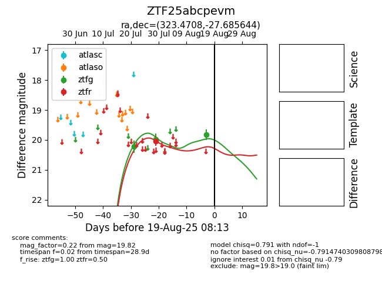

Target ZTF25abcpevm at 2025-08-19 09:59, see:
FINK: fink-portal.org/ZTF25abcpevm
Lasair: lasair-ztf.lsst.ac.uk/objects/ZTF25abcpevm
ALeRCE: alerce.online/object/ZTF25abcpevm
alt names
ZTF25abcpevm (ztf,fink)
coordinates:
equatorial (ra, dec) = (323.4708,-27.68564)
galactic (l, b) = (20.2981,-46.45625)
photometry
last ztfg=19.82, ztfr=20.04
3 ztfg, 1 ztfr detections
